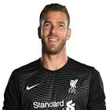

|  | Adrian |
| Gender | Male |
| Ethnic | Spanish |
| Job | Spanish Footballer |
| Desc | xxxx |
Affiliation
| Org | xxxx National Team |
| Club as Player | Liverpool FC |
| West Ham | |
| Real Betis | |
| xxxx |
: 2019 06 13 Manuel Pellegrini steered West Ham to a 10th-placed finish in the 2018-19 Premier League and bid farewell to players Samir Nasri, Andy Carroll and Adrian this summer
2019 08 05 Retrieve
[Liverpool have completed the signing of former West Ham goalkeeper Adrian following the departure of Simon Mignolet] I’m feeling really happy; really happy to be here and to work in this great club and start doing my stuff on the pitch as soon as possible. I’m very ambitious, I come here to try to win everything, to try to push Ali from the first minute and to make us better. Obviously I want to win titles. I come here to fight for all the competitions. We have many competitions ahead - we’re going to fight for it and try to get them. I’m looking forward to playing my first game at Anfield and to win as many games as we can
2019 08 14 Retrieve
[Ten days ago, Adrian was heading home. After six years in England, he was returning to Spain, ready to join Real Valladolid on a free transfer. Now, the 32-year-old is the man tasked with deputising for possibly the world’s best goalkeeper Alisson Becker] I come here to try to win everything to try to push Ali from the first minute.
I like to help the team from the back. Obviously we need to save goals but now the modern ‘keeper has to be very complete. I am still learning at my age, still learning and improving, but I think I have a great level to show and keep showing in the Premier League
2019 08 14b Retrieve
[Liverpool goalkeeper Adrian reflected on a crazy week after helping guide the Reds to Wednesday’s Super Cup victory over Chelsea in Istanbul] Welcome to Liverpool! It’s been a crazy week. I’m really happy for the team, I’m happy to play for Liverpool and happy for the fans. It was a long game but in the end a great finish for us
[Jorginho buried from the spot to restore the deadlock, but it was Adrian who got the last laugh as the Champions League winners sealed their second trophy of the year] I tried to stop when I saw him. Strikers are so intelligent. Tammy Abraham touched me, I touched him, but he was looking for that. I tried to stop, but I need to see the images again. At the end it doesn’t matter. We got the title and we will enjoy tonight
2019 08 14c Retrieve
[After the match finished 2-2 following 120 minutes of action in Istanbul, Adrian made the only penalty save as he denied Tammy Abraham and gifted the Reds another trophy] I like to help the team from the back. Obviously we need to save goals but now the modern keeper has to be very complete. I am still learning at my age, still learning and improving, but I think I have a great level to show and keep showing in the Premier League
2019 08 15 Retrieve
[Adrian made the only heroics’s save in a 5-4 penalty shootout win for Jurgen Klopp’s men in Istanbul] Welcome to Liverpool! I’m really happy for the team, I’m happy to play for Liverpool and happy for the fans. It was a long game but in the end a great finish for us
2019 08 16 Retrieve
[Liverpool goalkeeper Adrian hopes to retain his place between the sticks for a trip to Southampton on Saturday] Today I feel much better. It was a strange, weird situation because we were celebrating between us and one guy jumped from the crowd and started running. I think he slipped in front of us and also the security with him and made me a tackle from the side. It was a bit of a strange situation but I feel much better today and I hope [I’m] ready for tomorrow. I feel mentally ready and I also hope today with the treatment of the ankle it’s going to be much better. But I’m very optimistic to start playing tomorrow again
2019 08 20 Retrieve
[When asked to compare Van Dijk with his fellow countryman, Real Madrid captain Ramos] It is very difficult. For me they are the two best centre-backs in the world and would make an unstoppable partnership on any team. I think that having them in front of them, in defence, any goalkeeper in the world could be very calm. I had the opportunity to train with Sergio in the national team. He is number one inside and outside the locker room. And what can I say about Virgil that is not already known. He is at a spectacular level. He is a top centre-back. There is talk of him being a candidate to win the Golden Ball. For me, he totally deserves it. It is not easy being a defender in the Premier League and he showing that he has a spectacular level
[He is delighted to see his decision to join the Reds rewarded] The thing with Liverpool goes way back. The scouts had already contacted my representatives and checked the option to sign me, but it could not be done. I had a contract with West Ham and it was in its last year, but things changed. I practically didn’t play in the league and negotiations to renew did not end well. But, finally, my decision to leave was the right one and it allowed me to change clubs. I had several offers from Spain, some of them were advanced and also in other leagues. But when I got the offer from Liverpool, there was hardly anything to think about. They told us that they would sell Mignolet and I was the first option. If I said yes, they would not continue searching in the market. I just had to introduce myself in Liverpool. It was all done very quickly. In just two weeks everything happened
2019 08 21 Retrieve
[Adrian: Liverpool’s defenders are like animals!] It’s really easy to play with them in front of you because they were the best defenders in the Premier League [in 2018-19] and we have one of the best defenders in the world. I think, for me as a goalkeeper, they make easy decisions. Honestly, they defend everything like animals! They help me a lot. I played against them [the forwards] many times, so now I play with them and I’m enjoying how they play from behind. I’m really happy for them because they are doing really well, they have a great connection between them. They are good players individually, but they are good friends in the dressing room also and you can see that feeling on the pitch
[Adrian also hailed Alisson’s contributions for the club] I told him he was a great part [in Liverpool] being in the final. And that he was unlucky with the injury, but we’re going to fight for it and we’re going to get it, for sure. After the game he text me again. I text him and said, ‘This is for you because you got the Champions League and this Super Cup’. Maybe he was not personally there, but his help was there with us in Istanbul
2019 08 21b Retrieve
[Liverpool goalkeeper Adrian has admitted that would have gladly slept with the Super Cup after Liverpool’s penalty shoot-out success against Chelsea in Istanbul] After just one week, I played in the Super Cup and got this great feeling. I felt full of happiness in myself. I was having dinner with the guys after the game and I spoke with Millie and he said, ‘OK, do you want to take the trophy with you?’. I said, ‘I will sleep with her, I’m more than happy to sleep with her!’. We are playing football to live these kind of moments, great moments. Obviously, like life, you can have good and bad moments in your career. But we need to enjoy these kind of games and these kinds of moments. You need to enjoy it with your family, best friends, with fans, with the team-mates. And also change the mentality like, ‘Nothing is done, we need to keep playing
2019 08 23 Retrieve
[Adrian likened Liverpool’s defenders Virgil van Dijk to animals and said they make his job between the sticks that much easier] It’s really easy to play with them in front of you because they were the best defenders in the Premier League [in 2018-19] and we have one of the best defenders in the world. I think, for me as a goalkeeper, they make easy decisions. Honestly, they defend everything like animals! They help me a lot
2019 09 23 Retrieve
[Adrian has expressed his delight after Liverpool’s 2-1 victory over Chelsea at Stamford Bridge on Sunday] We are a team, we win together and we lose together. The other night in the Champions League against Napoli we lost, I don’t think we deserved to have that result and it was really hard for us, but we recover well. We are back in the Premier League and back to winning. It’s always important to have a good connection between all of the players, also the fans, the crowd, the manager, the staff - everyone. We are like a rock now and we are together. We are enjoying this moment but we need to keep looking forward for more points
We keep fighting and we keep that momentum going and keep it in a positive way, of course. We have done really well but we’ve done nothing yet so we need to keep going and keep fighting for the next one. We are on a good run in the Premier League with good energy and intensity. In the first half we did really well and I think we deserved the three points. Obviously they pushed in the second half but we defended really well
2019 10 17 Retrieve
[Alisson is back in full training at Liverpool and ready to reclaim his starting berth, but Adrian is not about to give up his place without a fight] I think it was almost fate. I was close, very close [to signing elsewhere] but the moment I received the call from Liverpool I told my agent to stop all negotiations
[He added on the challenges and responsibility he has faced since arriving on Merseyside] When I signed for Liverpool I knew I was coming for a big challenge in my career and I think the competition makes us better. So to have two No.1s in the team is great for both of us. It’s a good decision for the manager because everyone wants to have the best and I think we are here - two No.1s. It’s not my mentality to be a No.2 and even less so when I am 32. Maybe in four, five years time I will tell you differently but it’s much better than being in a comfort zone of one No.1 and the other [goalkeeper] sitting on the bench forever. But I also like to be united and work together. I’m full of confidence to help Liverpool on the pitch and from the bench when the manager decides that Alisson plays
[Alisson has come back into contention ahead of a trip to Manchester United] We will have a chat with the manager. Obviously he [Alisson] is fit and training with the team. As I say we are two No.1s now, waiting to see who is going to play. Last season Ali did really well and I’m here to push him and to help Liverpool. It will be the manager’s decision and after that we need to prepare for everything and if that is not in the Premier League [for me] it’s to try and have an opportunity in another competition
I feel really proud because if nobody missed the best goalkeeper in the world last season then it’s a good feeling for me. I was more than ready to face that challenge. The team has helped me a lot because it’s really easy to play with those defenders in front of you and we have made a magnificent start to the league: eight from eight.
He [Alisson] is a great keeper and a great person, which is the most important thing. We both speak Latin languages and that helps. The goalkeeping group has a good relationship - Andy Lonergan is training really hard, Caoimhin Kelleher as well. With the goalkeeper coaches we are a good group. And with the emotion we have to deal with - one is playing, one is not - the group has to be strong and push everyone. It’s much better for us
2020 01 04 Retrieve
[Adrian’s patience rewarded by ‘best club’ Liverpool after shunning offers to head home] The last year started in a difficult moment because, as everyone knows, I was in the last year of my contract with West Ham. I spent a good time there, six years playing for them and I really enjoyed that time. We didn’t have an agreement, so I had to decide to step to the side and continue my career [elsewhere].
We are footballers and we don’t know where we are going to be in the next season or the next one, so we have to make sure we are happy doing our job and I took that decision by myself. It was a long summer with many negotiations with different clubs, with Spanish clubs that called me because I was out of contract, but I think the patience I have inside myself gave me the power to take the right decision and finally I think the best club that could have called me was the club who called me. So, I am here right now, I am enjoying the moment.
2020 01 04b Retrieve
[Liverpool goalkeeper Adrian believes Jurgen Klopp is currently the best manager in the world] He [Klopp] is the captain of the boat. The players are working and fighting together and he tries to give us solutions to problems and makes us feel the team is more important than any individual. It doesn’t matter who plays or not - everybody is ready to win. I would say he’s the best right now. Everyone is behind him, we are like a rock and it’s difficult to break a rock. The fans, the people around us, everyone is a family because we take care of each other. Obviously Guardiola had a great time at Barcelona, they won everything, but now I think Liverpool has great momentum. We need to keep going but also enjoy this really nice moment for us
[The former Real Betis stopper again credits Klopp’s man-management skills for making him feel like a valued member of the squad since his arrival, even when on the bench] From the beginning I felt like a No.1 as well. We are fighting for the same spot and I never feel like I am a second goalkeeper forever, so I am always ready when the manager needs me
2020 01 04c Retrieve
[Adrian says Liverpool aren’t a machine, they just want to win] We are not a machine, we are human beings - but we have that winning mentality right now. The team has been working together for a few years. When Jurgen came to the club, he started doing many good things. From the end of last season when the team got the Champions League, that mentality has made the team stronger. The bad moment when the team lost the Champions League [in 2018] was really painful, but the year after they came back and won it, then the Super Cup and then the Club World Cup. We are still living the dream everyone started working on a few years ago. We need to enjoy it because we are in great momentum, but we need to keep our feet on the floor. We know we are a long time until we finish the season. Obviously, we want another trophy, to keep going in the Champions League and to start well in the FA Cup. There are many competitions ahead and the most important thing right now is to be together like a good family and fight for everything. We want to fight for all the games we have in front of us
We are a good squad, we have a great team and we have good personalities in the dressing room, so everyone has his role. Everyone knows in the moment the manager decides you will play you have to give your best, as we always do. Personally, my position is really hard because just one goalkeeper can play and the others have to support. In the beginning I had my opportunity when Ali had bad luck with the injury, but I showed I was ready. Ali came back to play and I was waiting for my next opportunity. Now we start in a new competition, the FA Cup, so I will give my best to show the manager I can help the team if I am selected. Not just in the dressing room or on the bench, but when he gives me an opportunity I can also help on the pitch
2020 01 27 Retrieve
[Adrian admits standards slipped against Shrewsbury] We are really disappointed obviously because we could have done much better than our performance. The result at the end was fair but the penalty they got was outside the box. But they had also many chances, they had many one-v-ones and we could have defended much better than we did. Now we have to face the second game in Anfield to try and go through to the next round
They deserve all the respect we give them. We respect all the rivals obviously but when we are on the pitch it’s 11 against 11, so you give everything for the result. At the end, they got a draw and obviously it’s like a win for them because we have to play the second game now at Anfield. But we need to have a look at ourselves and criticise ourselves because we are most critical of ourselves and try to improve and keep doing like we are doing in the Premier League
[Adrian added on seeing Liverpool pegged back by a brace from Jason Cummings against Shrewsbury] It’s true in football that you can never play relaxed. I think we relaxed a little bit after our second goal and after that they pushed even harder. They had desire and they tried to score. Then we conceded the first goal and then obviously the second one got us a bit down. We feel we didn’t perform as good as we are
2020 02 11 Retrieve
[Adrian says Klopp is a top strategist and a great person] What Jurgen has achieved here is extraordinary. Just look at how we are in the league. It is so easy working with him. So easy. He’s always smiling, cheerful, optimistic. He’s the manager but he behaves like any other member of the team. Him being close to us helps us believe in his methods. He’s convinced us all of his leadership and abilities by being close to us and proving that whatever is on his mind works in the end.
Klopp usually tells us that we’ll face many problems during the games, so we must be able to fix them. Any team can surprise you with a new system, for example. He’s there to guide us. He visualises football very well from the sidelines and transmits this knowledge to the players in a masterful way.
Training sessions are intense. He does his job passionately and that’s exactly how we perform on the pitch. Jurgen is not only a top strategist, but also a great person. The best group management I’ve seen. Next to the team through thick and thin
2020 02 11b Retrieve
[Adrian won’t let ‘best in the world’ Alisson relax at Liverpool after taking ‘drastic decision’] It was a moment I was hungrily waiting for. Not so soon, though. Fortunately, I was both mentally and physically ready. I had to see it that way. It’s never pretty when a team-mate gets injured, but only one of us can play. Alisson is peaceful, humble and deserves every single thing he has achieved. We spend so much time together, but still I’m here to fight. I won’t just sit down on the bench and wait. He won the Champions League and the Copa America last year. He was the best keeper in the world. But he can’t relax with me around. I’ve proved it
I’d made a drastic decision not to stay any longer at West Ham, despite having a three-year contract offer on the table. I hadn’t played a single game all season in the Premier League. I didn’t feel valued economically either, to be honest. It was tough for me. Summer came and then I felt those butterflies in my stomach. I knew something good was coming. I was already aware of Liverpool’s interest before I received the first offers. They [Liverpool] called me at the end of July. They said that they’d sell [Simon] Mignolet if I gave the deal the green light. That’s how it happened
2020 03 03 Retrieve
[Adrian assesses crucial period in treble pursuit] We have three finals. The next three games are three finals for us to show that we want to be alive in all of them and win all of them. The first one is on Tuesday, we are preparing for that game. We are more than ready to go there and win that game against Chelsea. It’s going to be tough but we’re going to have our supporters from Liverpool in the crowd. Then Bournemouth are coming, the Premier League is back. We need to bounce back from the defeat against Watford and we play at Anfield, so we hope to show our fans that was just a bad game and we are still there. And the next one is Atletico Madrid, it’s also going to be a really tough game in the Champions League. It’s another final as well, we need to come back from 1-0 down. We need to go step by step. Now, it’s 100 per cent focus for everyone on Tuesday
He knows how to manage; he’s not just a coach, he’s a great manager. He manages very well all the people in the dressing room, he manages the psychological and mental stuff. It’s more about us. You need to find the target, we can’t just wait for the time and wait for the game. We have to go for them from the first one; the Premier League is against Bournemouth the next one, the FA Cup is on Tuesday against Chelsea, and then our next target is Atletico Madrid. We had a nice meeting after the defeat against Watford - no complaining, not telling people what mistakes they made or not. It was just to learn about the things that happened on Saturday. It’s football; like life, sometimes you have good moments and sometimes you have not good moments. Last Saturday was not the best moment for us performing on the pitch. We are much better than that and we want to show that in the next ones, for sure
2020 03 08 Retrieve
[Adrian fires Atletico warning ahead of Champions League clash] It was a tough game after a few bad results. The confidence of everyone was a bit down but I think today we showed the winning mentality is back. The team came back after the the early goal from Bournemouth and we showed again that we are here to face the end of the season and face the big challenges that are coming. It was really important to get the three points to get that confidence back again, 100 per cent. I think the experienced players have to show character out on the pitch. I think today we showed character, we came back into the game, we scored two good goals with Sadio [Mane] and Mo [Salah]. They are back to scoring again and that is very important for the strikers to get confidence
On Wednesday we face a big challenge against Atletico Madrid here at Anfield. We need to come back against the result in Madrid but Anfield will be on fire for sure. The fans will be supporting from the first second. I think we know the style of play of Atletico. We have to prepare in the next few days as well as possible to try to keep the ball, be patient, move the ball quickly, because for sure they are going to [try to] defend the result here. But it’s going to be difficult for them to defend again for 95 minutes - here at Anfield it’s a different history. Madrid was Madrid but now we have the second leg here. We are going to win the game for sure.
2020 04 09 Retrieve
[Adrian ‘really happy’ at Liverpool as speculation builds regarding summer return to Spain] This club has totally exceeded my expectations. I think coming here was the perfect decision at the perfect time, to come to the best team in the world right now. I am really happy I took that decision, to have that patience in that moment of the summer and to be here.
I prepare mentally exactly the same as when I am a No.1 because I never feel that I am a second ‘keeper forever, to sit on the bench and just wait and wait and wait and don’t care about playing. I prepare in every session of training like I was starting because that makes me feel ready - for when any opportunities come, I am ready for everything. I never prepare myself to sit on the bench at the weekend. Obviously Ali knows he is No.1 and he is doing well. He is a top ‘keeper, one of the best in the world, and all the prizes he has got he deserves because he showed that he deserves them. But I think that the competition is great, the healthy competition between us is better for us because it makes us improve. The comfort zone is not good for anyone anywhere in life - you need to improve every day and keep pushing and keep trying to do the best. I think that healthy competition, that good feeling we have between us is great for us, great for the team and great for the manager.
2020 05 14 Retrieve
[Liverpool’s Adrian not fearing Premier League restart] No fear at all. There is respect, a lot of respect and responsibility. It is quite a serious situation, but we are professionals. We are here for what we are
This week has been quite important regarding the meetings. There is still one with the captains, managers and coaches of the Premier League. They have given us the green light to train starting next Monday in small groups and the league is expected to start in mid-June. But right now the situation is still serious around here. You have to solve the number of deceased
2020 05 22 Retrieve
[Adrian credits fellow goalkeeper Oblak for inspiring Atletico Madrid to beat Liverpool in Champions League] The first days you eat away at yourself, you don’t accept that was the last game, you get that bad taste in your mouth, quite sour from having lost a tie. When it seems that we have it pretty well on track at home, a game where we had twenty-odd shots on goal, but we lose. The man of the match was definitely Oblak and, in the end, Atletico played their game, they beat us in both games and they should have progressed because they deserved it
[Recalling his debut] It didn’t give me time to think. When Alisson sat on the floor and the doctor gestured to make the change because he couldn’t carry on, I got up quickly. I didn’t have time to warm up or anything. It was the first game, and to go out that way and for Anfield to receive me like this, everyone getting up in the seats applauding me, after having lost one of the best players of last season, it gave me full confidence. From there my beautiful story began here at Liverpool.
2020 06 10 Retrieve
[Adrian has insisted he is happy at Liverpool] I see myself in Liverpool at the moment. I still have many years of football left, and we will see. I have one more year and another optional one. Right now I wouldn’t change anything to be here in Liverpool and enjoy this beautiful moment. After this moment I honestly don’t know, football is a lot of fun. In the summer, being a free agent, I saw the possibility of returning to Betis was there, but it vanished. After this moment I honestly don’t know, football is a lot of fun. In the summer, being a free agent, I saw the possibility of returning to Betis was there, but it vanished
To tell you the truth, now I see it being a little more difficult (to return to the Betis). After six seasons at West Ham and being free this past summer, it is true that I saw myself closer to returning home or to Spain and continuing my career there. Here I signed two seasons plus an optional one and this has been my first year, which has been fantastic. We hope to finish the season if possible, with total security, on the pitch, but then we don’t know anymore. The future is very uncertain; we can’t plan much more about tomorrow and what we have now. If the opportunity is given in the future, God will say.
2020 06 30 Retrieve
[Champions of England, Europe & the world!] [It’s] all the smiles on the faces. Being champions of Europe, champions of the world and champions of England - not everyone can say this, so we are champions. All of the Liverpool fans are champions and I think everyone deserves this moment
[The Spanish shot-stopper added on landing a long-awaited Premier League crown] It’s an outstanding sensation for everyone because we know all of us how difficult it is, even the fans who were waiting for this moment, and we did it. We fight from the beginning of the season to give everything. The season has been outstanding, historical for many staff as we know, but we give that happiness and that joy to the Liverpool fans because they deserve it
It was euphoria all round [on Thursday]. As you know we were waiting for this for a long time. We were fighting from the beginning but this is like life, we have highs and lows. Last season was a really bad end of the [domestic] season because we couldn’t get the Premier League, but then we won the Champions League. And this season everyone wanted to win the Premier League from the first second because everyone had the same target. We fight every session of training here [at Melwood], for every ball, for every second that we play, so I think we deserve it and we need to enjoy the moment - but also keep going because we have another seven games to go